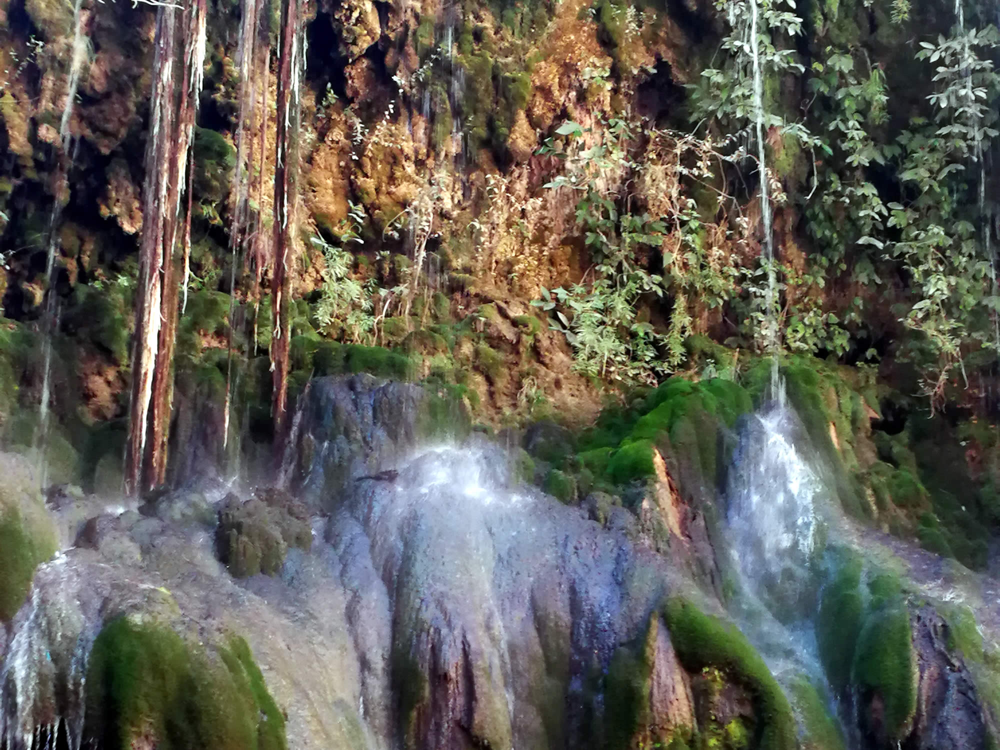

El departamento de Potosí es uno de los nueve departamentos en que se divide Bolivia. Su capital y ciudad más poblada es la homónima Potosí, famosa por sus yacimientos de metales preciosos, que trascendió al tesauro o al acervo léxico del idioma español con la oración vale un Potosí. Está ubicado al suroeste del país, limitando al norte con los departamentos de Oruro y Cochabamba, al este con los departamentos de Chuquisaca y Tarija, y al sur con la República Argentina hasta el trifinio cerro Zapaleri, donde empieza su frontera con la República de Chile, hacia el oeste. Según el último censo oficial realizado el año 2012, el departamento cuenta con una población de 828 093 habitantes. La densidad es de 7,7 hab/km² siendo el tercer departamento menos densamente poblado —por delante de Beni y Pando. El departamento fue fundado el 23 de enero de 1826 por el mariscal de ayacucho Antonio José de Sucre. Administrativamente el departamento de Potosí se encuentra conformado por 16 provincias, que a la vez, estos se encuentran divididos en 41 municipios. El municipio de Potosí es el más poblado con una población de 191.302 habitantes, concentrando al 23,10 % del total de la población departamental. Otros municipios también de importancia por la cantidad de población que tienen son los siguientes respectivamente: Llallagua,unciaTupiza, Villazón, Colquechaca, Betanzos, Cotagaita, San Pedro de Buena Vista y Uyuni.